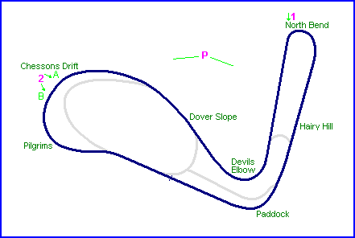
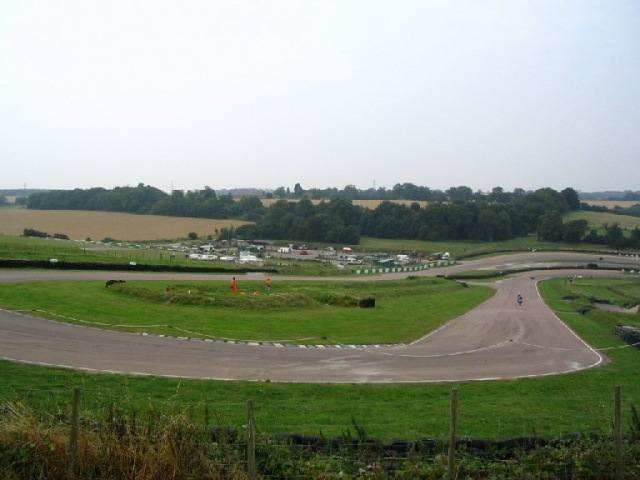
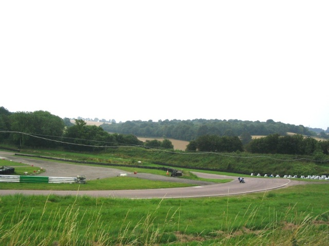
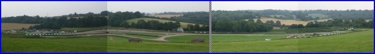

2A. - Looking to the left at Chessons Drift down Dover Slope towards the Paddock.
Lydden, United Kingdom
Type: Road Course
Length: 1.000 Miles / 1.609 km
Photographs Taken: July 2004
The circuit was created as a grass track by Bill Chesson in 1955, and is situated in Lydden, a village located ten miles to the northeast of Dover. Early events used the circuit in an anticlockwise direction. The original short track was paved and extended in the 60's, hosting Formula 3 and other national racing. Later, the track became a successful and popular venue for rallycross events. In 1989, the circuit was sold to Tom Bissett, a Rallycross enthusiast. Shortly afterwards, half of the shares were bought by the TAG McLaren Group, who later acquired the remaining shares to become the sole owners. Plans were made to reprofile the circuit into a McLaren test track, however these were subsequently abbandoned. In 1993, McLaren leased the circuit to the British Motor Cycle Racing Club, with car races being organised by the South East Motor Sports Enthusiasts Club.

Numbers and arrows on map indicate the location and direction where the photographs
were taken.
Return to racingcircuits.net's Photo Archive Main Index

1. - View from the North Bend
2A. - Looking to the left at Chessons Drift
down Dover Slope towards the Paddock.

2B. - Looking to the right at Chessons Drift
down Dover Slope towards the Paddock.

P. - Panoramic view of the circuit [click to enlarge]
Photographs ©Michel Marti. Reproduced here with kind permission.